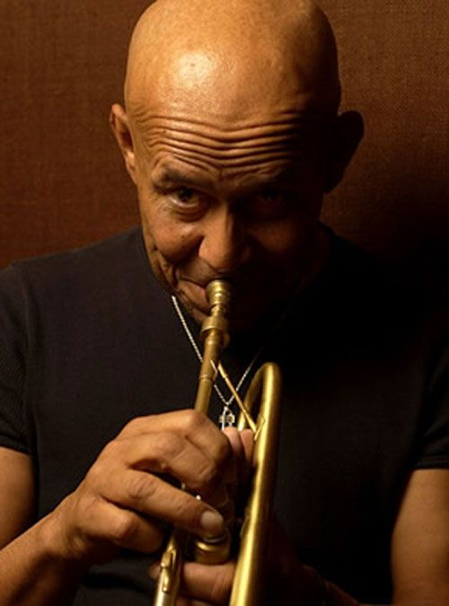

|  |
Eddie Henderson (США)АМЕРИКАНСКИЙ ДЖАЗОВЫЙ ТРУБАЧ, ФЛЮГЕЛЬГОРНИСТ Эдди Хендерсон – американский джазовый трубач, флюгельгорнист. Музыкальная карьера Эдди началась в младшем школьном возрасте. Еще в девять лет свой первый урок музыки он получил у великого Луи Армстронга (Louis Armstrong). Огромное влияние на творчество Эдди также оказали известные джазовые трубачи: Клиффорд Браун (Clifford Brown), Букер Литл (Booker Little), Вуди Шоу (Woody Shaw) и Майлс Дэвис (Miles Davis). Первый сольный альбом под названием «Реализация» (Realization) Эдди Хендерсон записал еще в далеком 1972 году. На протяжении своей многолетней деятельности Эдди активно сотрудничал с легендарным тенор-саксофонистом Ферреллом Сандерсом (Pharoah Sanders), Майком Ноком (Mike Nock), Нормоном Коннорсом (Normon Connors), Артуром Блэйки (Art Blakey), обладателем 14 премий «Грэмми» Херби Хэнкоком (Herbie Hancock) и др. Дискография Эдди Хендерсона насчитывает 23 альбома. С 2007 года Хендерсон преподает в Джульярдской музыкальной школе (Juilliard school), Нью-Йорк. С 2014 года является доцентом джазового факультета по классу трубы Оберлинской музыкальной консерватории (Oberlin Conservatory of Music), штат Огайо, США. |